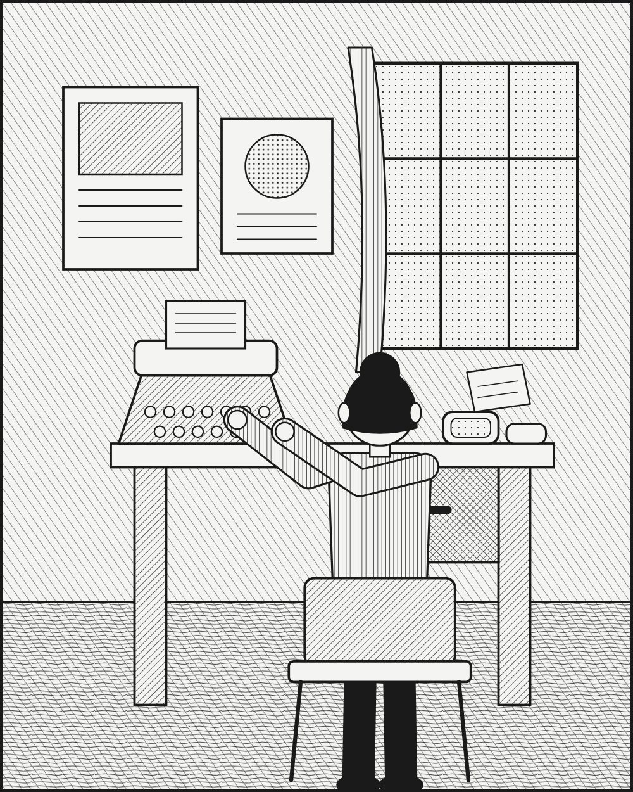

광고·마케팅 업계 뉴스 · 발행인 SM C&C 윤석진
광고 카피에 처음 '여성의 목소리'를 들인 사람

독자 여러분, 오늘은 광고 카피에 '여성의 목소리'를 처음 들인 사람을 소개합니다. 헬렌 랜스다운 레조는 미국 광고회사 J. 월터 톰슨(JWT)에서 일한 카피라이터로, 광고계의 첫 여성 카피라이터로 불립니다. 그녀가 우드버리 비누에 붙인 한 줄 'A skin you love to touch(만지고 싶은 피부)'는 비누의 성분 대신 그 비누를 쓰는 사람이 누릴 감정과 관계를 그렸고, 캠페인 매거진은 이 광고를 처음으로 매력을 판 광고로 소개했습니다. 물건을 사는 사람의 상당수가 여성이던 시절, 그녀는 여성 소비자의 시선으로 문장을 썼습니다. 훗날 미국 광고 명예의 전당에 이름을 올렸고, 지금도 그녀의 이름을 딴 장학금이 젊은 인재들에게 이어지고 있습니다. 백 년도 더 된 이야기지만, '누구에게 말하는가'를 먼저 묻는 습관은 오늘의 브리프에도 그대로 통합니다.